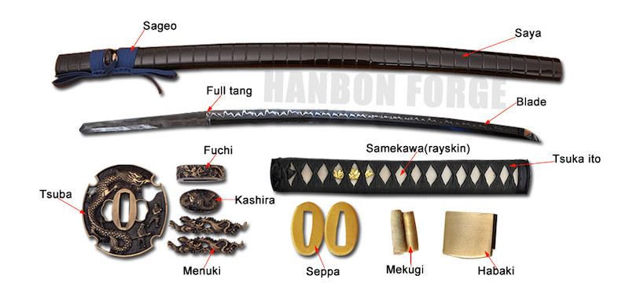

Four Main Parts
The Blade
The Katana blade is described as a curve, sharp, Steel blade. The blade was formed from an iron sand ore, which was melded into the Tamagahame or "purest steel"
The Tsuba
The Tsuba (su-ba) is the spuare or circular guard between the Blade and Tsuka. It protects the user from cutting their hands when they lose grip of the katana. It also protect the user from opposing sword users.
The Tsuka
The tsuka (su-ka) is the grip of the katana, this is so that the sword doesn't slip out of the user's hand and the tuska is usually long so that it can be hep with two hands.
The Saya
The saya (sa-ya) is basically the sheath of the katana. These usually protects the katana and the user, protects the katana from rust and dust and protects the users from harming themselves.